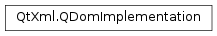

QDomImplementation¶
Synopsis¶
Functions¶
- def
__eq__(arg__1) - def
__ne__(arg__1) - def
createDocument(nsURI, qName, doctype) - def
createDocumentType(qName, publicId, systemId) - def
hasFeature(feature, version) - def
isNull()
Static functions¶
- def
invalidDataPolicy() - def
setInvalidDataPolicy(policy)
Detailed Description¶
The
PySide2.QtXml.QDomImplementationclass provides information about the features of the DOM implementation.This class describes the features that are supported by the DOM implementation. Currently the XML subset of DOM Level 1 and DOM Level 2 Core are supported.
Normally you will use the function
QDomDocument.implementation()to get the implementation object.You can create a new document type with
PySide2.QtXml.QDomImplementation.createDocumentType()and a new document withPySide2.QtXml.QDomImplementation.createDocument().For further information about the Document Object Model see Level 1 and Level 2 Core. For a more general introduction of the DOM implementation see the
PySide2.QtXml.QDomDocumentdocumentation.The QDom classes have a few issues of nonconformance with the XML specifications that cannot be fixed in Qt 4 without breaking backward compatibility. The Qt XML Patterns module and the
PySide2.QtCore.QXmlStreamReaderandPySide2.QtCore.QXmlStreamWriterclasses have a higher degree of a conformance.
-
class
PySide2.QtXml.QDomImplementation¶ -
class
PySide2.QtXml.QDomImplementation(arg__1) Parameters: arg__1 – PySide2.QtXml.QDomImplementationConstructs a
PySide2.QtXml.QDomImplementationobject.Constructs a copy of
x.
-
PySide2.QtXml.QDomImplementation.InvalidDataPolicy¶ This enum specifies what should be done when a factory function in
PySide2.QtXml.QDomDocumentis called with invalid data.Constant Description QDomImplementation.AcceptInvalidChars The data should be stored in the DOM object anyway. In this case the resulting XML document might not be well-formed. This is the default value and QDom’s behavior in Qt < 4.1. QDomImplementation.DropInvalidChars The invalid characters should be removed from the data. QDomImplementation.ReturnNullNode The factory function should return a null node.
-
PySide2.QtXml.QDomImplementation.createDocument(nsURI, qName, doctype)¶ Parameters: - nsURI – unicode
- qName – unicode
- doctype –
PySide2.QtXml.QDomDocumentType
Return type: Creates a DOM document with the document type
doctype. This function also adds a root element node with the qualified nameqNameand the namespace URInsURI.
-
PySide2.QtXml.QDomImplementation.createDocumentType(qName, publicId, systemId)¶ Parameters: - qName – unicode
- publicId – unicode
- systemId – unicode
Return type: Creates a document type node for the name
qName.publicIdspecifies the public identifier of the external subset. If you specify an empty string (QString()) as thepublicId, this means that the document type has no public identifier.systemIdspecifies the system identifier of the external subset. If you specify an empty string as thesystemId, this means that the document type has no system identifier.Since you cannot have a public identifier without a system identifier, the public identifier is set to an empty string if there is no system identifier.
DOM level 2 does not support any other document type declaration features.
The only way you can use a document type that was created this way, is in combination with the
PySide2.QtXml.QDomImplementation.createDocument()function to create aPySide2.QtXml.QDomDocumentwith this document type.In the DOM specification, this is the only way to create a non-null document. For historical reasons, Qt also allows to create the document using the default empty constructor. The resulting document is null, but becomes non-null when a factory function, for example
QDomDocument.createElement(), is called. The document also becomes non-null when setContent() is called.
-
PySide2.QtXml.QDomImplementation.hasFeature(feature, version)¶ Parameters: - feature – unicode
- version – unicode
Return type: PySide2.QtCore.boolThe function returns
trueif QDom implements the requestedversionof afeature; otherwise returnsfalse.The currently supported features and their versions:
Feature Version XML 1.0
-
static
PySide2.QtXml.QDomImplementation.invalidDataPolicy()¶ Return type: PySide2.QtXml.QDomImplementation.InvalidDataPolicyReturns the invalid data policy, which specifies what should be done when a factory function in
PySide2.QtXml.QDomDocumentis passed invalid data.See also
PySide2.QtXml.QDomImplementation.setInvalidDataPolicy()QDomImplementation.InvalidDataPolicy
-
PySide2.QtXml.QDomImplementation.isNull()¶ Return type: PySide2.QtCore.boolReturns
falseif the object was created byQDomDocument.implementation(); otherwise returnstrue.
-
PySide2.QtXml.QDomImplementation.__ne__(arg__1)¶ Parameters: arg__1 – PySide2.QtXml.QDomImplementationReturn type: PySide2.QtCore.boolReturns
trueifxand this DOM implementation object were created from different QDomDocuments; otherwise returnsfalse.
-
PySide2.QtXml.QDomImplementation.__eq__(arg__1)¶ Parameters: arg__1 – PySide2.QtXml.QDomImplementationReturn type: PySide2.QtCore.boolReturns
trueifxand this DOM implementation object were created from the samePySide2.QtXml.QDomDocument; otherwise returnsfalse.
-
static
PySide2.QtXml.QDomImplementation.setInvalidDataPolicy(policy)¶ Parameters: policy – PySide2.QtXml.QDomImplementation.InvalidDataPolicySets the invalid data policy, which specifies what should be done when a factory function in
PySide2.QtXml.QDomDocumentis passed invalid data.The
policyis set for all instances ofPySide2.QtXml.QDomDocumentwhich already exist and which will be created in the future.doc = QDomDocument() impl = QDomImplementation() # This will create the element, but the resulting XML document will # be invalid, because '~' is not a valid character in a tag name. impl.setInvalidDataPolicy(QDomImplementation.AcceptInvalidData) elt1 = doc.createElement("foo~bar") # This will create an element with the tag name "foobar". impl.setInvalidDataPolicy(QDomImplementation.DropInvalidData) elt2 = doc.createElement("foo~bar") # This will create a null element. impl.setInvalidDataPolicy(QDomImplementation::ReturnNullNode) elt3 = doc.createElement("foo~bar")
See also
PySide2.QtXml.QDomImplementation.invalidDataPolicy()QDomImplementation.InvalidDataPolicy
© 2018 The Qt Company Ltd. Documentation contributions included herein are the copyrights of their respective owners. The documentation provided herein is licensed under the terms of the GNU Free Documentation License version 1.3 as published by the Free Software Foundation. Qt and respective logos are trademarks of The Qt Company Ltd. in Finland and/or other countries worldwide. All other trademarks are property of their respective owners.